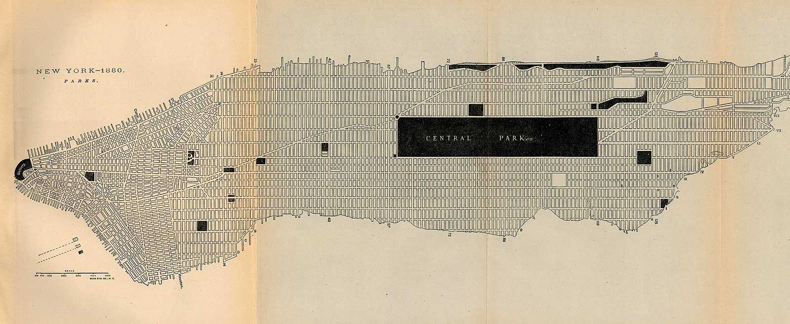

GET /hypermedia-design
HTTP/1.1 302 Found
Location: http://absynthmind.github.io/hypermedia-design/
Content-type: presentation/reveal+css
context
The rest of REST
http://tessel.io

http://martinfowler.com/articles/richardsonMaturityModel.html
“REST is software design on the scale of decades:
every detail is intended to promote software longevity and independent evolution.”
“Many of the constraints are directly opposed to short-term efficiency.
Unfortunately, people are fairly good at short-term design, and usually awful at long-term design.”
Design on the scale of decades
context